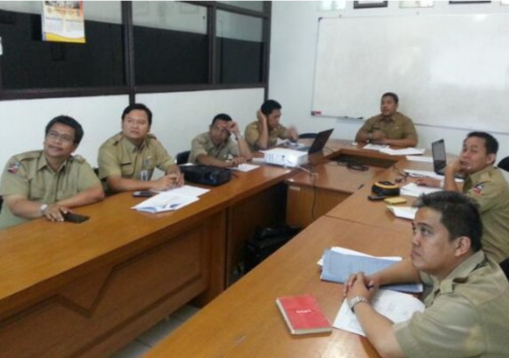

FOTO KEGIATAN DISKOMINFO KOTA BOGOR
Bimbingan Teknis Website OPD Kota Bogor
Simulasi Informasi Perencanaan Pembangunan
SIM Pembangunan Kota Bogor
Pelatihan E-Surat Kota Bogor
Bimbingan teknis Website OPD Kota Bogor
Pembukaan Training Sistem Informasi Manajemen (SIM) Wilayah dalam Pelayanan Publik
Rapat Koordinasi Penyediaan Informasi Publik Berbasis Website
Rapat Tentang CELL Plan
Rapat Tentang Kebijakan TIK
Rapat Tim Perencana Aksi Daerah Pencegahan Dan Pemberantasan Korupsi Kota Bogor
Rapat Tentang Fiber Optik
Rapat Pembahasan Renstra Kominfo Kota Bogor

Koordinasi PPDB Online

Rapat Menara
sosialisasi pengawasan dan pengendalian menara telekomunikasi
Sosialisasi Warnet Sehat”
Uji Coba Sim Puskesmas
Workshop Citizen Engangement Mechanism
Acara Bazar
Bersama Relawan TIK Dari Korea
Diklat PIM Kabupaten aceh Tenggara
Dinas Komunikasi Dan Informatika Kota Bogor
Kunjungan Ke Kota Denpasar Bali

Kunjungan Kerja Kantor Kominfo Kota Surabaya
Penerimaan Tamu Diklat PIM 3 Provensi Sulawesi Tengah
Perbaikan Internet Di Kelurahan Situ Gede 2 Kota Bogor
Kunjungan Kerja Ke Kantor Kominfo Kabupaten
IDSA Award 2013
Sarana Kantor Kominfo Kota Bogor
Fasilitas Kantor Kominfo Kota Bogor
×